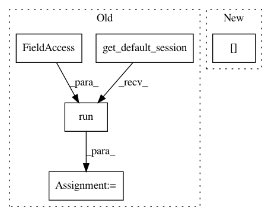

65878bf34c16e45b6ffaedef305fa260cf474498,softqlearning/policies/nn_policy.py,NNPolicy,get_action,#NNPolicy#Any#,28
Before Change
@overrides
def get_action(self, observation):
feeds = {self._obs_pl: observation[None]}
action = tf.get_default_session().run(self._action, feeds)
return action.squeeze(), None
def plot_samples(self, ax_lst, obs_lst, output=None):
output = self._action if output is None else output
After Change
@overrides
def get_action(self, observation):
return self.get_actions(observation[None])[0], None
@overrides
def get_actions(self, observations):
In pattern: SUPERPATTERN
Frequency: 3
Non-data size: 5
Instances
Project Name: rail-berkeley/softlearning
Commit Name: 65878bf34c16e45b6ffaedef305fa260cf474498
Time: 2018-01-23
Author: haarnoja@users.noreply.github.com
File Name: softqlearning/policies/nn_policy.py
Class Name: NNPolicy
Method Name: get_action
Project Name: rail-berkeley/softlearning
Commit Name: bdd1a023482b34aa9980c64b434ce75824e16543
Time: 2018-05-22
Author: kristian.hartikainen@gmail.com
File Name: sac/policies/gmm.py
Class Name: GMMPolicy
Method Name: get_action
Project Name: rail-berkeley/softlearning
Commit Name: 5d97c32fba6dab5ff8009bf350a4209f3ea5684d
Time: 2018-05-22
Author: kristian.hartikainen@gmail.com
File Name: sac/policies/gmm.py
Class Name: GMMPolicy
Method Name: get_actions